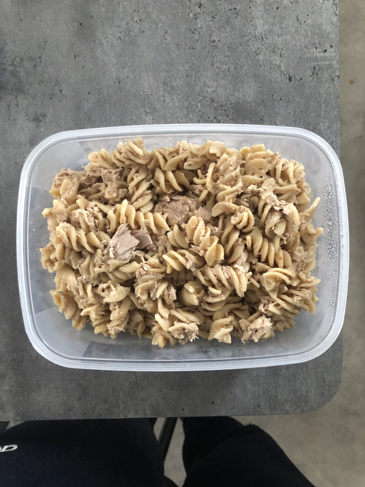

Tuna Mayo Pasta

Description
Simple and easy to make for lunch or dinner
Ingrediants
Servings: 1
- Pasta 100g
- Tin of Tuna 1
- Mayonaise 1Tbsp
Steps:
- Boil some water and put into a pot where it will be brought back to boiling
- Add Pasta in and cook for 10-12mins
- Drain the water and allow pasta to cool down
- Add mayonaise and tuna (drained) and mix together in the pot
Go Back